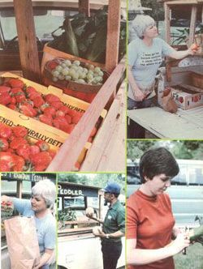
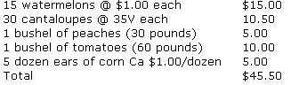

You don't have to "grow your own" to make a tidy part-time profit from fruits and vegetables.
My friend Carol Lea and I didn't go near a garden all last summer, yet we netted nearly $35 a day selling produce. Our source of fresh fruits and vegetables was a farmers' market in Knoxville, Tennessee. We'd simply make a 40-minute "produce run" from our home base in Pigeon Forge each day . . . carefully select our purchases . . . load up our just-the-right-size mini-pickup . . . and head back to the mountains.
AN OCCASIONAL ENTERPRISE
We operated our peddling venture in an on-again-off-again manner for most of the summer, since heavy rains frequently put a damper on our business for days at a time. However, the fact that our enterprise allowed us to work at our own convenience-and still do fairly wellfar overshadowed the occasional uncertainty of the operation.
The longest period during which we were able to "run the roads" on a daily basis was a 20day rainless stretch during the month of July. In the course of that dry spell-while we were peddling only one not-really-full truckload each trip-our average net per day came to $34.31, adding up to a total 20-day profit of $686.20. We actually brought in $1,633.85, but spent $808.23 for merchandise to resell, $66.80 for gasoline for the truck, and $72.62 for miscellaneous expenses, including ice and paper bags. Furthermore, our earnings would have been greater if we hadn't taken a long weekend off over the 4th of July, which would certainly have been the most productive four days of the whole summer.
The amount of fresh food we procured varied: Our smallest daily load cost $32, and the largest set us back $85.75. Of course, some items didn't have to be sold on the first-or even on the second-day. Jars of honey, for instance, were slow movers but good keepers, since we didn't have to worry about spoilage.
A TYPICAL DAY'S PURCHASE
On an average day, our shopping list might look something like this:
Another day, of course, we might want to try plums instead of peaches (on occasion we couldn't find any peaches, but plums would be plentiful), or we might decide to buy white seedless grapes or nectarines instead, especially if we had some peaches or plums left over from the previous day's sales. Whatever items we bought, though, we always tried to keep an interesting variety on hand . . . and aimed to stock only food that would make people want to yank the yummies right off our truck and pop them into their mouths!
As you'd imagine, time often limited the quantity of goods we could handle in a day. When the Pigeon Forge tourist season was in full swing, we were simply unable to hit each campground on a daily basis. In fact, during the height of the season, when most of the 1,469 drive-in spaces in the area were occupied, it would sometimes take us up to two hours just to work our way through one campground . . . since-in addition to actual selling time-we spent many minutes talking, reloading, and so forth.
We discovered that late afternoonfrom 3:00 p.m. until dark-was the best time to catch people at their "homes away from home". We were sometimes able to cover only two campgrounds within those hours, but the hungry hordes in just one or two areas would often descend on our offerings with a vengeance and leave our pockets full and our truck all but empty (not that we minded, you understand). In such cases we'd simply have to wait until the next day to buy a fresh load.
AN ULTERIOR MOTIVE
Actually, our produce business was originally intended to be nothing more than a means of letting travelers through the foothills of the Great Smokies know about our shop, Tennessee's Mountain Peddler . . . where we market countrysmoked ham, sausage, bacon, cheese, and craft items (and whose name we displayed prominently on the produce truck).
Because we were already in business, we were a jump ahead of most folks who might want to try a venture of this sort. All the legalities and technicalities-such as securing city and county licenses, and learning about liability insurance and sales tax requirements in our state-had long ago been dealt with.
Of course, there was still plenty of start-up work to be done. We had to visit the campground owners and managers, for instance . . . to tell them of our plans and obtain permission to pass through their property in order to sell to their customers.
Most of the business folks were delighted with our idea. In fact, they looked on it as a service they could provide to the campers, and none of "our" owners ever charged us a fee or commission . . . although they certainly appreciated the few tomatoes, plums, or whatever that we'd leave for their use when we started our rounds. We found that dropping by with such gifts was a good way to say "thank you", since most of the campground managers were too busy to do much personal shopping.
GETTING OUTFITTED
Besides obtaining permission from the owners to sell in their campgrounds, we had to gather some equipment before starting our business. Our first necessity was a set of scales. Fortunately, my partner's dad had an extra, which he let us borrow. Had we marketed only things we could sell on a "per item" basis, we wouldn't have needed scales. Since we were going to be "per-pounding" most of the produce, however, we had to have some means of weighing it.
Our decision to sell by the pound also dictated a need for paper bags. At first we simply bought lunch bags in sets of 100 at the local supermarket . . . but that source turned out to be unnecessarily expensive. The sacks cost about 98 cents for 100, compared to the $4.00 for 500 of the same size that we eventually learned could be purchased from a paper manufacturing company located in the same part of town as the farmers' market. We wound up using two sizes: No. 6 (holding about six pounds) for most items and No. 16 (16-pound capacity) for the larger produce, such as cantaloupes or ears of corn.
And, let's face it, whenever you're selling anything, you have to be able to make change . . . but nobody wants to lug around a cashbox or cash register on a truck (or shell out the extra loot to buy one, either). We found that a carpenter's cloth nail bag (it cost $1.55 at our hardware store) worked just fine for us. The sack allowed us to keep change at our fingertips by simply tying on the apron and stashing our cash in the pouches. ( We usually started out each day with enough paper money to change a $20 bill, plus $10 worth of coins.)
On our first few produce-purchasing rounds, we had to buy bushel containers-along with the fruits and vegetables-usually for 55 cents per basket. After that, we simply swapped the containers when we went for more goods. However, we did buy four half-bushel-baskets at our local grocery store, for 99 cents each . . . since the smaller containers fit on the side shelves of the truck. Our bushels were then used to store additional goodies, in the truckbed, which were kept available to restock our displays.
A COVER STORY
Not long after we started our business, we found ourselves forced to come up with a cover for the back of the pickup. Originally, Carol Lea and I-since our cash was limited, and since we lacked the time we thought would be needed to search out someone able to do (inexpensively) the carpentry the job would require-just loaded up the vehicle and made do with the tops from cardboard cartons, or whatever other temporary shelter we could fashion, to help protect all our "tender vittles".
We soon found out that, even so, a hot summer sun would speed our products' demise, and we decided a "cover-up" was essential. Luckily for us, though, another of my partner's relatives came to our rescue. Before we knew it, we had a homemade $50 "truck shed" . . . with a roof (that gave our produce protection from the elements) and outwardly tilted shelves that provided a marvelous way to show off our goods as we meandered along the campground roads.
But even though the campers could see our displayed produce, we always made a point of "hawking our wares" to anyone we saw as we drove through. . . calling out something like, "Need any tomatoes, cantaloupe, corn, or watermelon today?" (People are sometimes a little shy about being the first ones in line, but we found that if just one brave soul stopped us, we'd soon be surrounded by other people . . . including some who'd already answered "no" to our inquiry!)
IT'S ALL IN THE BUYING
Experience, they say, is the best teacher, and our first summer taught us the importance of buying the right things at the right time at the right price. In order to do so, of course, we first had to give thought to the campers who'd be our customers.
Most of the summertime road people are unable or unwilling to take much food with them . . . in fact, the majority of the folks we encountered told us they'd set out with no more than enough eatables to last a couple of days. The average camper doesn't have much space for perishable items, since traveling food storage is usually limited to an apartment-sized refrigerator or frequently just a picnic cooler. And even though most campgrounds do make some "staples" available (milk, bread, etc.), not many sell fresh produce.
What's more, vacation time is adventure time for many people, and part of the excitement consists of the chance to try regional foods, including homegrown fruit and vegetables or items the visited area is well known for . . . such as a local variety of honey.
For all these reasons, then, most of the camping public welcomed us when we pulled up, our truck loaded with almost anything we figured folks could eat with little or no preparation: peaches, grapes, bananas, apples, plums, nectarines, cantaloupes, watermelons, tomatoes, corn, and onions. (In our experience, such comestibles as cucumbers, green peppers, beans, and okra would sell . . . but we were never able to move them quickly enough to prevent our losing money through spoilage.)
THE BIGGER, THE BETTER
In most cases, the larger our offerings were, the more cash people were ready to hand over in order to sample the goods. However, the rule didn't hold true for watermelons. Oversized melons are impressive, all right, but smaller ones sold much better: Again, most campers simply don't have enough space to store or to cool even a medium-sized melon. In addition, the fact that we could offer the smaller beauties already chilled-in a used-but-not-abused 52-gallon wooden whiskey barrel that we cut in half and transformed into two of the dandiest melon and ice toters you've ever seen-insured that the little globes would be good sellers.
BARGAIN AND BEWARE
Since one of the secrets of successful produce marketing is careful buying, we made a point of being picky . . . inspecting every potential purchase with an eagle eye. Did the fruit-we would ask ourselves-have a good color? Was it firm, yet ripe enough to be eaten on that day or the next . . . or was it too ripe to permit much handling? And, of course, we always had to determine if it was the very best quality we could find . . . on that particular day and for the money we could spend.
Furthermore, we quickly learned the value of dickering on price. The sellers could always say no, but bargaining often left more money in our pockets.
It didn't take us long, either, to discover the need for caution when dealing with folks we didn't know. We found that most people we bought produce from were honest, but there were a few tricks we had to learn to watch out for. One favored technique is "topping" . . . and it's often used when packing peaches, tomatoes, and apples that are to be sold by the bushel. In this deceptive game, the bottom of the basket is filled with some really pretty fruit, the middle is loaded with poor specimens, and the best are saved for last . . . to be placed right on top where the buyer can't miss 'em.
Even when the potential purchase is poured from the seller's basket into the buyer's right before his or her eyes, topping will be hard to spot . . . as the carefully selected bottom layer will then wind up on top. We learned about such deception the hard way. Inno cents that we were, we bought one lovely-looking bushel of peaches without checking "beneath the surface", and-sure enoughthose in the center were cut and bruised so badly that we ended up giving most of them away.
WHAT TO CHARGE
During the first weeks of our venture, we'd check the grocery store prices dai ly, and try to sell our produce for a little less than such outfits charged. However, we soon found that this was unnecessary, as our customers would let us know if we were overpricing or underpricing anything: They simply didn't buy at all, or they'd buy like crazy! Whenever either happened, we knew that we had to make some immediate adjustments (usually by 10 cents per pound up or down).
In most cases, our policy was to double our money on those items we sold by the pound and add a $1.00 markup on perunit goods such as watermelon or honey. And even though we paid maybe 350 cents each for cantaloupes, we were able to sell them for two different prices . . . usually 75 cents for small ones, and $1.00 for bigger melons.
The largest profit percentage we ever earned on one purchase was made during July at a time when most northern Tennessee home gardens weren't yet producing. Vine-grown tomatoes were very much in demand, and we were able to buy one 60-pound bushel of trucked-in "culls" for $5.00. (A canning company had rejected them as "imperfect" because of their markings.) We sold the bushel at 60 cents a pound (which was less than the going retail rate at the time) and cleared $31 on that one basket!
Much of the time, however, our prices would be determined by the condition of our merchandise. The riper the fruits and vegetables became, the lower we'd mark them. But, even when items had gone beyond the selling point, they were usually plenty good enough to eat. If use couldn't use the overripes, we always tried to find someone (family or friends) who could. Actually, the fact that we were able to enjoy "first pick" as well as "last call" on all our produce proved to be a fine little side benefit . . . especially since we'd purchased the goods at bulkbuying prices!
AT SUMMER'S END
As we looked back over that summer, we found that our peddling venture had accomplished even more than we'd initially hoped for. We were able to give our shop some much-needed publicity through very personal contact with people who would otherwise have been difficult to reach and impress. We know we made more shop sales as a direct result of seeking out the campers, since such customers would often tell us that they'd seen our truck or had bought a watermelon (or what have you) from us.
Best of all, instead of paying out $600 or more for the kind of advertising that would have brought us to the attention of a like number of people, we were able to bring in well over that amount of cash, and still get the job done. (We loved having our cake and eating it too! )
Besides that, we know we've stumbled on a good way to bring in a little extra cash during the summer, regardless of whatever else we might do or wherever else we might be. The long holiday weekends-those that include Memorial Day, July 4th, and Labor Day-could be ideal targets for even part-time campground produce peddlers . . . and, if you grow your o-um eatables, your profits could be even bigger than ours were!
|
 |
 |
|